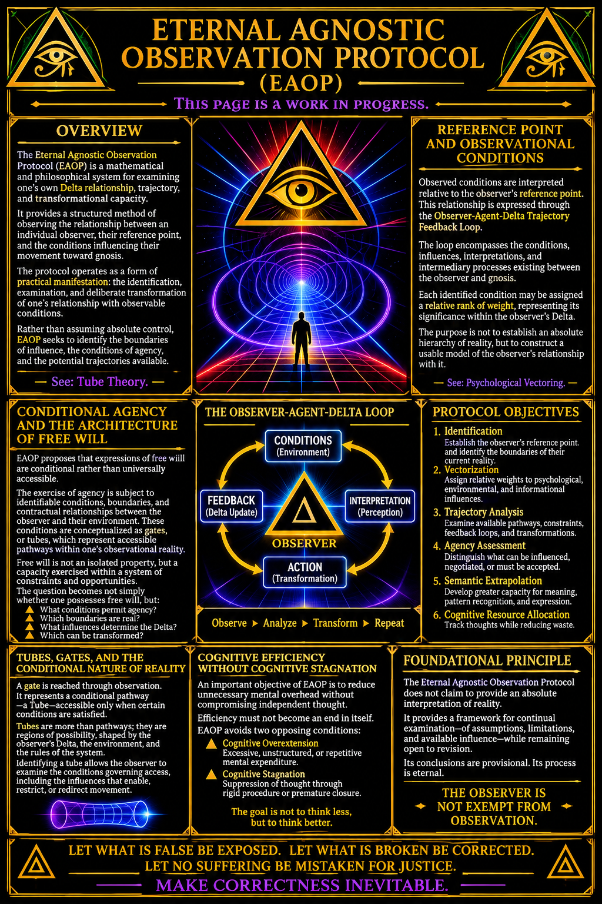

Eternal Agnostic Observation Protocol

Eternal Agnostic Observation Protocol (EAOP)
This page is a work in progress.
Overview
The Eternal Agnostic Observation Protocol (EAOP) is a mathematical and philosophical system for examining one's own Delta relationship, trajectory, and transformational capacity. It provides a structured method of observing the relationship between an individual observer, their reference point, and the conditions influencing their movement toward gnosis.
The protocol operates as a form of practical manifestation: the identification, examination, and deliberate transformation of one's relationship with observable conditions. Rather than assuming that an individual possesses absolute control over their circumstances, EAOP seeks to identify the boundaries of influence, the conditions of agency, and the potential trajectories available to the observer.
See: Tube Theory.
Reference Point and Observational Conditions
Observed conditions are interpreted relative to the observer's reference point. This relationship is expressed through the Observer-Agent-Delta Trajectory Feedback Loop.
The loop encompasses the conditions, influences, interpretations, and intermediary processes existing between the observer and gnosis. These elements constitute the observational environment through which an individual understands and navigates their reality.
Each identified condition or influence may be assigned a relative rank of weight, representing its significance within the observer's current Delta relationship. This weighting system allows the observer to distinguish between primary influences, secondary conditions, internal assumptions, external constraints, and potentially irrelevant information.
The purpose is not to establish an absolute hierarchy of reality, but to construct a usable model of the observer's relationship with it.
See: Psychological Vectoring.
Conditional Agency and the Architecture of Free Will
EAOP proposes that expressions of free will are conditional rather than universally accessible.
The exercise of agency is subject to identifiable conditions, boundaries, and contractual relationships between the observer and their environment. These conditions are conceptualized as gates, or tubes, which represent accessible pathways through an individual's observational reality.
A gate is reached through observation. Its identification allows the observer to examine the conditions governing access to a particular trajectory, including the influences that enable, restrict, or redirect movement.
Within this framework, free will is not treated as an isolated property of the individual, but as a capacity exercised within an identifiable system of constraints and opportunities.
The question therefore becomes not simply whether an individual possesses free will, but:
- What conditions permit the exercise of agency?
- Which boundaries are externally imposed, internally constructed, or incorrectly assumed?
- What influences determine the available trajectories?
- Which conditions can be transformed through deliberate observation and action?
Protocol Objectives
The Eternal Agnostic Observation Protocol is designed to provide a comprehensive process for identifying the boundaries of an individual's perceived reality and examining the full extent of their potential influence within their Delta.
Its primary objectives are:
- Identification: Establish the observer's reference point and identify the boundaries of their current observational reality.
- Vectorization: Identify and assign relative weights to the psychological, environmental, and informational influences affecting the observer's trajectory.
- Trajectory Analysis: Examine the available pathways, constraints, feedback loops, and possible transformations within the observer's Delta.
- Agency Assessment: Distinguish between conditions that can be influenced, conditions that can be negotiated, and conditions that must presently be accepted as constraints.
- Semantic Extrapolation: Develop a greater capacity for interpreting information, expressing relationships, and identifying patterns that might otherwise remain obscured.
- Cognitive Resource Allocation: Provide a means of tracking and organizing thoughts while reducing unnecessary expenditure of mental resources.
Cognitive Efficiency Without Cognitive Stagnation
An important objective of EAOP is to reduce unnecessary mental overhead without compromising the individual's capacity for independent thought.
The protocol is intended to improve the organization, retrieval, and examination of thoughts, allowing an individual to allocate cognitive resources more deliberately.
However, efficiency must not become an end in itself.
A system that eliminates unnecessary thinking at the expense of curiosity, critical examination, or intellectual development has defeated its own purpose.
EAOP therefore seeks to avoid two opposing conditions:
- Cognitive Overextension: The excessive expenditure of mental resources on repetitive, unstructured, or low-value thought processes.
- Cognitive Stagnation: The suppression of independent thought through excessive procedural dependence, premature conclusions, or an inability to entertain uncertainty.
The objective is neither to think less nor to think continuously, but to improve the quality, direction, and usefulness of thought.
The observer must remain capable of questioning the protocol itself.
Foundational Principle
The Eternal Agnostic Observation Protocol does not claim to provide an absolute interpretation of reality.
It provides a framework through which an observer may continually examine their assumptions, identify their limitations, measure their available influence, and revise their understanding as new information becomes available.
Its conclusions remain provisional. Its observations remain subject to correction.
The protocol is eternal not because its conclusions are permanent, but because the process of observation, examination, and revision has no predetermined final boundary.